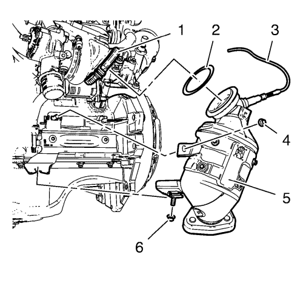
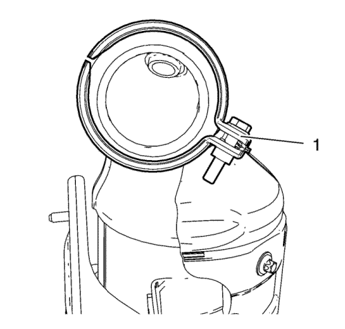

Montaje del catalizador de tres vías de calentamiento — 1.4L LUH y LUJ

- Monte el catalizador de tres vías calentado (5) en los soportes y el turbocompresor. Utilice una junta hermética (2) NUEVA para el catalizador de calefacción de tres vías.
Nota: Jamás vuelva a utilizar la abrazadera en V.
- Monte una abrazadera en V (1) NUEVA para el catalizador de calefacción de tres vías.
- Monte las 2 tuercas del catalizador y el soporte del catalizador (4) y (6), apretándolas con la mano.
- Apriete con la mano la abrazadera en V del catalizador.
- Conecte el mazo de cables de la sonda Lambda calentada (3) en el clip de soporte.

- La abrazadera en V del catalizador (1) debe montarse en la posición indicada.
Precaución:Consulte Precaución con las fijaciones en la sección Prólogo.
- Apriete las tuercas del catalizador y el soporte del catalizador a 22 N·m (16 lib. pie).
- Apriete la abrazadera en V del soporte del catalizador a 13 N·m (115 lib. pulg.).
| © Copyright Chevrolet. All rights reserved |